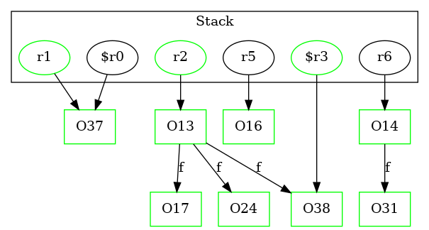

-1 : r5 := @this: Test1B
-1 : r2 := @parameter0: Test2Node
-1 : r6 := @parameter1: Test2Node
37 : $r0 = new Test1A
37 : specialinvoke $r0.|Test1A: void |init|()|()
37 : r1 = $r0
38 : $r3 = new Test2Node ->class soot.jimple.internal.JAssignStmt {Left: class soot.jimple.internal.JimpleLocal, Right: class soot.jimple.internal.JNewExpr}
38 : specialinvoke $r3.|Test2Node: void |init|()|()
38 : r2.|Test2Node: Test2Node f| = $r3
39 : $r4 = |java.lang.System: java.io.PrintStream out|
39 : virtualinvoke $r4.|java.io.PrintStream: void println(java.lang.Object)|(r1)
40 : return
